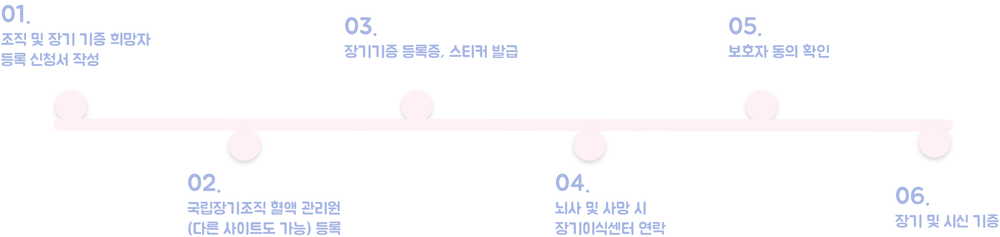

장기기증 신청 절차 순서는 어떻게 될까요?
살아있는 사람의 장기기증 절차
장기이식 등록기관에 장기기증 등록
국립장기이식관리기관에 이식대상자선정 승인 요청
국립장기이식관리센터의 승인
장기기증을 위한 장기적출
이식대상자에게 장기이식
사후 / 뇌사자의 장기기증 절차
사후
본인의 장기기증희망 등록 또는 본인이
서명한 문서나 유언에 의한 동의
장기기증자 본인의 사망
가족의 명시적인 거부가 없는 경우
기증을 위한 장기적출
이식대상자에게 장기이식
뇌사자
기증장의 장기기증희망 등록
장기기증희망등록자 본인의 뇌사추정 상태 발생
뇌사판정
장기기증을 위한 장기적출
(가족의 명시적인 거부가 없는 경우)
이식대상자에게 장기이식
기증자를 위한 지원제도에는 어떤 것들이 있을까요?
뇌사 장기기증자 및 인체조직기증자 지원금 지원
1) 장제비, 진료비
2) 장례지원 서비스
3) 기증자의 순수/무상기증 취지를 살려 사회단체 기부
*유가족이 1,2,3 중 택 1
살아있는 사람의 순수 장기기증 시 검진 진료비 지원
- 이식대상자를 지정하지 않고 간장, 신장 등 장기를 기증한 경우, 기증 후 1년 동안 정기검진 진료비 지급
- 사전검진 후 본인의 의사가 아닌 사유로 기증이 이루어지지 않은 경우, 사전검진 진료비 지급
근로자의 장기기증을 위한 입원기간에 대한 유급휴가 보상금 지원
근로자인 기증자의 장기기증을 위한 신체검사 또는 적출 등에 소요된 입원기간에 대해 유급휴가로 처리한 경우, 근로자의 사용자에게 유급휴가 보상금을 지급
생명나눔증서 발급
뇌사 장기기증자 / 인체조직 기증자/ 안구기증자 유가족에게 감사의 글 및 생명나눔증서 발급
온라인 추모관 운영
질병관리본부 장기이식관리센터 홈페이지내에 생명나눔 추모관 운영
가족, 친자는 물론 질병관리본부 장기이식관리센터 홈페이지를 방문하는 모든 사람들이 기증자의 아름답고 숭고한 뜻을 추모
이외에도 지역별로 사랑의 장기 기증 신청을 독려하고 기증의사 전 진료비를 지원하거나 지역 화장장 이용료 면제와 봉안료 감면 및 보건소 진료비 면제,
관광지 입장료, 공영주차장 주차요금 감면 혜택 등이 제공됩니다. 지역별로 상이하므로 거주지 보건소에 문의하는 것이 가장 좋은 방법입니다.
또한 인체조직 기증자 및 뇌사 장기 기증자 유가족과 이식자의 만남을 진행해 서로의 감정을 공유하는 치유 프로그램과 지역별 추모행사 및 보건복지부 장관 감사패 등을 제공하고 있습니다.